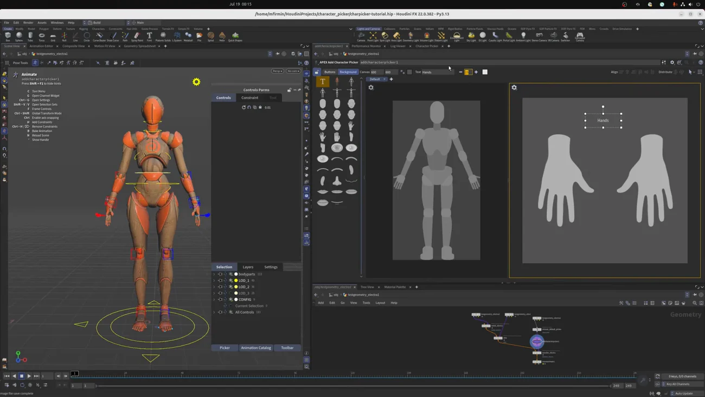
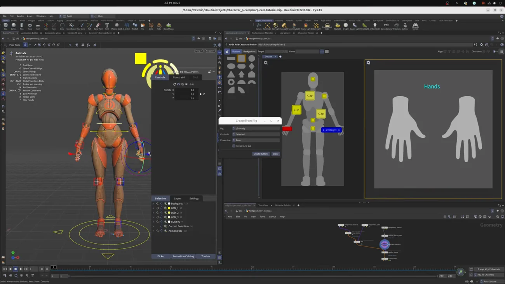

Character Picker でコントロール選択 UI を作る
出典: Houdini 22 | How to Use the Character Picker （SideFX 公式「Houdini 22 How-To」の1本 / Houdini 22 / 12:08 / 英語）。 このページは、上記の動画を見ながら自分用にまとめた日本語の学習メモです。SideFX 公式の翻訳ではありません。
何のためのものか
H22 で追加された APEX Character Picker は、 2Dの図とボタンでリグのコントロールを選択する UI です。
ビューポートで直接クリックしづらいコントロール — 指のような小さいもの、 ポーズや視点に隠れているもの — を確実に選べるようになります。 指を1本ずつ選ぶために毎回カメラを回す、という手間が消えます。
1. 基本操作
| 開き方 | New Pane Tab → Animation → Character Picker |
| 前提 | アニメートステートに入っていないと使えません。先にステートに入ります |
| 選択に追加 | Shift + クリック |
| 選択から除外 | Ctrl + クリック |
H22 では Electra と Auto のテストジオメトリにピッカーのレイアウトが同梱されています。 自分のキャラでは自作します。
2. 作る場所は2つある
| 場所 | 特徴 |
|---|---|
| キャラクターレベル | 新ノード Add Character Picker を使います。 レイアウトをキャラに埋め込めるので、後から使い回せます |
| Scene Animate レベル | シーン内の複数オブジェクトを参照できるピッカーを作れます （複数キャラ、キャラ＋プロップの組み合わせなど） |
3. 背景を作る（Background レイヤー）
Add Character Picker ノードを選ぶと、 パラメータ欄がピッカーのパネルそのものに置き換わるのでその場で編集できます （独立パネルでも編集できます）。

| 操作 | 内容 |
|---|---|
| キャンバスサイズ | ツールバーかリサイズウィジェットで。
Shift ドラッグで中心から、Ctrl ドラッグでアスペクト比を保持 |
| 複数レイアウト | タブを追加するか、Split View（左右／上下）で分割します。 例では「体用」と「手用（細かい）」の2つ |
| 回転 | Ctrl を押すと15度刻みにスナップします |
| 左右揃え | 複製して反転すれば左右の手をすぐ揃えられます |
| ラベル | カタログからドラッグ。テキストはダブルクリックかツールバーで編集、フォントサイズと色も変えられます |
画像の追加は4通り
- 右クリック → Add Image from Viewport（キャラを良い見た目に並べてから撮ります）。 ドラッグで移動でき、スナップ線が中央合わせを助けます
- ディスクから
- URL からダウンロード
- 左のカタログからドラッグ — 全身や各部位のテンプレート画像が用意されています
画像をキャンバスにスケールする、逆に画像からキャンバスサイズを決める オプションもあります。
4. ボタンを置く（Buttons レイヤー）
この機能でいちばん大事な挙動がこれです。
ボタンを追加すると、そのときシーンで選択されているコントロールを自動でターゲットにします。
つまり先にコントロールを選んでからボタンを置くのが手順です。 逆順にすると、ボタンだけができて何も選択できないものになります。
| 操作 | 内容 |
|---|---|
| 追加 | カタログからドラッグ＆ドロップ、または単に Ctrl + クリック |
| ターゲットの変更 | ツールバーから現在のビューポート選択に設定、またはツリービューから選択 |
| ボタンの見た目 | 名前の変更、ラベル表示のオン／オフ、色の設定 |
複数のボタンを一度に作る
Add button per control を使います。 シーンで複数のコントロールを選ぶと、 ピッカーは選択した順番を覚えていて、同じ順番でボタンを作ります。
だから背骨のコントロールを下から順に選んでおけば、 ボタンも下から順に並び、順に選択していけます。 選択順が保たれるのは地味ですが効きます。
並べるための道具
| 機能 | 内容 |
|---|---|
| スナップ | 既定でオン。他のボタンの位置に吸い付きます。
Shift + X かスナップメニューでオフにできます |
| Align | 他のボタンと揃えます |
| Distribute | 等間隔に並べます |
| サイズ | ラベルに合わせる / 最小サイズにする / 複数選択してサイズを揃える |
| Preserve button sizes | グループをリサイズすると既定ではボタン自体も拡縮します。 これをオンにするとサイズを保ったまま配置だけ動かせます |
| グループ選択 ↔ 個別選択 | 切り替えられます。位置を変えずに複数のボタンのサイズだけ変えることができます |
5. Create from Rig — 3Dから投影する
ゼロから並べるのは大変なので、3Dシーンのコントロールをレイアウトに投影できます。

- 投影したいコントロールをクリックして選びます
- 投影方向を選びます（ビューポートから、または直交方向のいずれか）
- Create Buttons を押します
- 投影された位置にボタンが自動配置されるので、あとは微調整します
初期レイアウトを一気に作れるのがこの機能の価値です。 そこから少し直すだけで済みます。コントロールを追加で選んで投影を繰り返すこともできます。
Mirror Button で反対側を作る
ボタンを選んでグループモードに戻して Mirror Button を押すと、 反対側にミラーされます。これで指のセットアップが一気に終わります。
6. その他のメニュー
| レイアウトの入出力 | JSON でインポート／エクスポートできます |
| タブの複製 | 現在のタブを複製できます |
| キャラクターの置換 | 選択したボタン、または全タブのキャラクターを置き換えられます。 シーンレベルで作業するときに特に便利です |
JSON で出し入れできるのは実務的です。レイアウトを資産として共有できます。
7. Scene Animate レベルでの見え方
複数キャラをマージした Scene Animate ノードでピッカーを開くと、 各ピッカーのレイアウトが別々のタブとして入ってきます。
| 状態 | 挙動 |
|---|---|
| Edit モード | 入ってきたタブはロックされます。 下流では編集できず、作られたノードでしか編集できません |
| ロックを外して Normal Select モード | Auto と Electra の既定ピッカー（HDA 経由で入ってきたもの）と、 自分で作ったレイアウトが並んで使えます |
「編集は作った場所でしかできない」という制約は、 最初は不便に見えますが、下流で勝手に変わらないという意味では妥当だと思います。 シーンに集めるのは使うためで、直したければ元のノードに戻る、という分担です。
この回のまとめ
- アニメートステートに入っていないと使えません。まずここです
- 作る場所は2つ。キャラに埋め込む（Add Character Picker）か、Scene Animate で複数を参照するか
- ボタンは「そのとき選択されているコントロール」をターゲットにします。先に選んでから置きます
- Add button per control は選択した順番を覚えています
- 並べる道具は揃っています。スナップ（
Shift+Xで切替）、Align、Distribute、サイズ揃え、Preserve button sizes - Create from Rig で 3D から投影すれば初期レイアウトが一気にできます。Mirror Button で反対側も即座に
- レイアウトは JSON でインポート／エクスポートできます
- Scene Animate に集めたタブはロックされ、作ったノードでしか編集できません